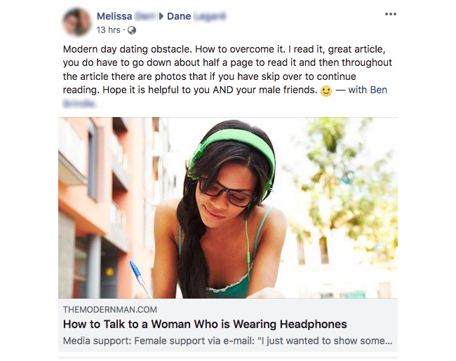
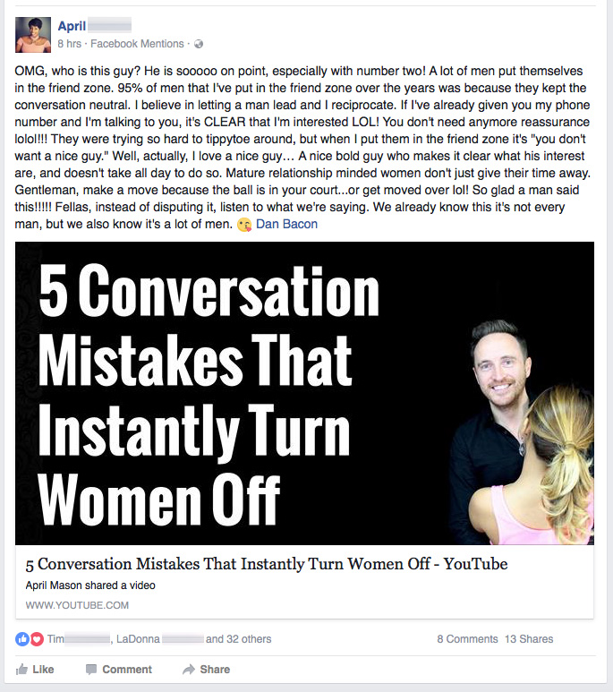

Media support:
Jenny McCarthy (Hollywood actress) interviewed me on Sirius XM radio and showed her support for my article.
“I have my headphones on and it’s usually a “do not disturb” thing for me, but if I was a single person, I would have no offense to a guy coming up to me and wanting to talk to me.”
“What a good thing you’re doing Dan. What a great thing you’re doing.”
Michelle Andrews has written an article on MamaMia showing her support for my article: When Did a Man Asking a Woman to Remove Her Headphones Become an Act of War?
“If I’m deeply consumed in music and a man wants to ask me on a date, he should go for it. He has every right to spark a conversation with me and see if I’m interested.”
Joy Pullmann has written an article on The Federalist showing her support for my article: Even Women With Headphones May Want A Man To Chase Them
“Many women love a man who has the balls to ask them out, to plan our interactions, to say affirmatively what he wants in life and go after it. Wimpy pajama boys are a total turn-off. Many, perhaps even most, women would like something in between—strong yet not overpowering, someone who listens. Yet the whiners are telegraphing to men that we want the wimpy end of the spectrum. They need to stop ruining it for all of us.”
“Dan has some great tips.”
Amanda Prestigiacomo has written an article on The Daily Wire showing her support for my article: Feminist Magazine: It’s ‘Sexual Harassment’ To Talk To A Woman Wearing Headphones
“Feminists will not rest until they have successfully turned every last man into an Obama-approved Pajama Boy.
In their latest stunt aimed to neuter men while simultaneously infantilizing women, feminist magazine Bust blogger Patricia Affriol warns all those with a Y chromosome that they mustn’t ever speak to a woman who is wearing headphones.”
But, let’s be honest, if Affriol is anything like the feminists we’ve previously witnessed in media, we’ll soon find a piece penned by her complaining about the lack of male attention she receives while wearing headphones.
Random examples of how women show support on social media:


Female support via e-mail:
“I just wanted to show some support for you and your team after the infamous headphones article. I’m a married woman from Texas–maybe Australia and Texas are the only places where people still have common sense and women are attracted to confident men! The feminist culture is doing so much harm to both genders, so I’m thankful for guys like you not backing down when faced with overwhelming criticism. Please know that for every person who criticizes you, there are hundreds who support you but just don’t speak up. The insecure, hateful people only sit at their keyboards and anonymously hate you because they have nothing better to do (like a day job), and it makes them feel better about their pathetic selves to try and destroy someone else–especially someone who stands against their perfect little false reality where there are no genders at all. Anyway, keep the faith. Obviously your audience isn’t made up of creepers and rapists, and anyone with half a brain will know that you aren’t encouraging negative behavior. Much love from Texas! J Foley”
“In the wake of all the buzzfeed and Twitter attention, I wanted to give my support for what you do. I’m a woman and read the headphones article…and you were spot on with your advice. I’ve been married for a while now, and seeing the nastiness people, specifically women, were posting scared me. Are women that vicious now? Are men not allowed to be part of the world and do what the hell they want as well? S Lytle”
Customer support:
“Hey Dan, Ben and Stu,
You guys have my support.
Buzzfeed are one of the many prime examples of what is wrong with today’s media. No wonder so many guys are afraid to approach women. Seeing this story break into the news, most guys would believe that ALL women think that way, but it’s just a very small percentage of women, namely the angry feminists.
I just want to say that if it weren’t for you guys I’d have never lost my virginity (did so a month before I was 26) till I was probably in my late 30s or 40s.
Thanks to the Flow, Dating Power, Better than a Bad Boy and Mastery Methods and Mindsets and little bit of 21 Ways to Get a Girlfriend I’ve also developed my own high standards about the type of woman I want. I have a girlfriend now and we’re very happy together.
Thanks again Dan, Ben and Stu. You guys are champs!
PN, USA”
How to Talk to a Woman Who is Wearing Headphones
These days, many women walk around playing with a smartphone or tablet device and are often wearing headphones and listening to music at the same time.
Yet, it doesn’t always mean that you, or anyone else, can’t say hello to her.
If a woman wearing headphones is single and hoping to meet a boyfriend (or even a new lover), she will usually be happy to take off her headphones to give you an opportunity to create a spark with her.
If a woman isn’t single, she will usually be nice and take off her headphones if a confident, normal guy comes up and says hello to her.
If the woman then tells the guy that she has a boyfriend or doesn’t want to talk to him, the conversation can end right there with a, “No problem. Have a nice day.”
However, if she is single and the guy is a normal, confident, good guy, then a conversation will usually begin and there may be an opportunity for the two to connect and exchange phone numbers.
Who knows, they could be a perfect match and end up getting into a happy, loving relationship that lasts for life.
Alternatively, they might not be a match and if that’s the case, there’s no problem.
The guy can simply say, “Anyway, nice chatting to you. Have a great day” and leave the interaction.
No harm done.
In most cases, when a guy walks up to talk to a woman with headphones on, it’s usually a positive and friendly interaction that can lead to a new romance (e.g. they exchange numbers, add each other to social media or have a coffee and take it from there) or a, “Nice to meet you. Have a great day” as they part ways.
Approaching and Talking to a Woman Who is Wearing Headphones
To begin with, smile and say, in a confident, easy-going manner, “Hey, how’s it going?” to start a conversation with her.
Most women are polite and friendly and will take off their headphones to talk to you at that point, so just start talking and have a conversation with her.
For example:
Man: [Smile and say in a friendly, easy-going manner manner] Hey – how you doing? I was walking along and saw you with your little headphones on and thought – wow, she’s hot, I have to come over and say hi you. I’m Dan, what’s your name?
Woman: Jessica.
Man: [Add in some light humor to get her smiling and create a spark between you] Jessica…let me guess. You were listening to heavy metal music, right?
Woman: [Most likely laughing and saying] No, I was listening to [most likely latest pop music] 🙂
Man: Oh, that’s cool. You had me worried there. I thought you were like a heavy metal girl who likes head banging at concerts.
Woman: [Possibly smiling or laughing].
Man: [If you’re in a shopping mall or city street, you might let her know that you has something else to do besides talk to her, so she understands that you’re not going to stand there talking to her for 30 minutes] Anyway, I’m just out doing a bit of shopping at the moment. How about you?
If it’s clear that she is interested in talking to you, have a chat for a while before exchanging phone numbers and parting ways.
For example:
Man: Anyway, so it’s been good chatting to you, but I’d better get going and do my shopping. Would you like to talk again sometime?
Woman: Sure, that would be nice.
Man: Okay, cool. [Take out your phone]. What’s your number? I’ll give a call sometime to say hi.
Approaching Women
As you may have noticed, women usually don’t go around actively approaching men in public places or even in bars or clubs.
Most women acknowledge that it’s the man’s role to be confident enough to walk over and talk to a woman that he finds attractive, so they have a chance to meet.
If a man doesn’t have the confidence to approach, a woman will rarely walk over and talk to him first.
Some women do approach guys (e.g. in response to a dare by friends, when very drunk), but most women wait for a guy who has the confidence to walk over and start a conversation.
Of course, not every woman is single or looking to be approached, so if you start talking to a woman and she doesn’t seem to want to talk to you, then just end the conversation by saying, “Okay, nice to meet you. Have a great day.”
Yet, if she is single and is open to being approached by a normal, confident, good guy, then just keep chatting and then either exchange phone numbers, or if both you and her have time, find somewhere to sit and have a coffee (e.g. a nearby coffeehouse, cafe).
Who knows…
You and her might be a perfect match and get into a happy, loving relationship that lasts for life.
The only way that you and her are going to find that out, is if you have the confidence to say hello.
If she isn’t single, or doesn’t want to talk to you, then just say, “No problem. Have a great day” and end the interaction.
Yet, if she does seem keen to talk to you, then just keep talking and get to know each other.